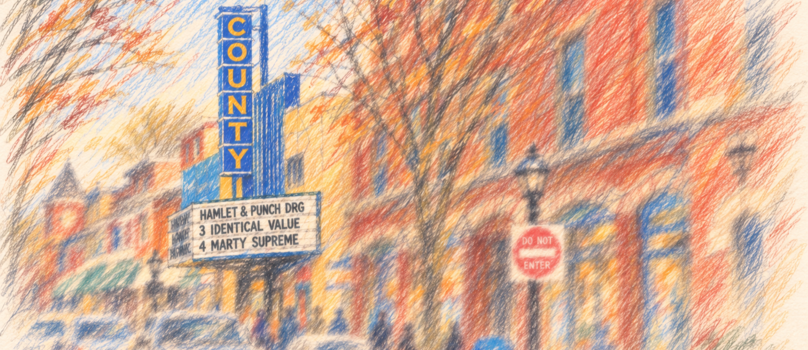
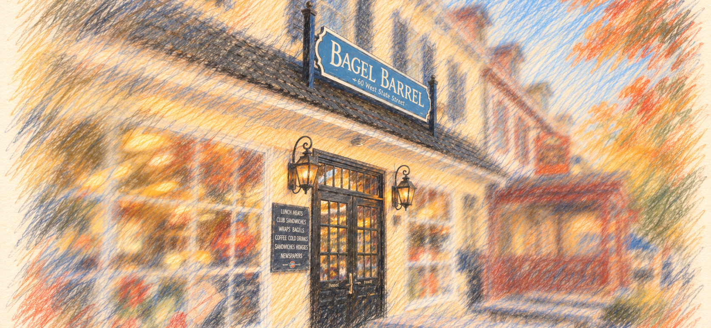
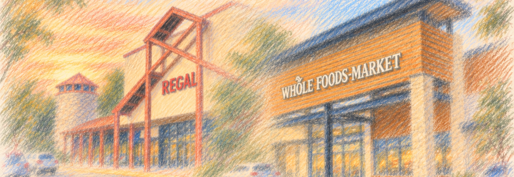
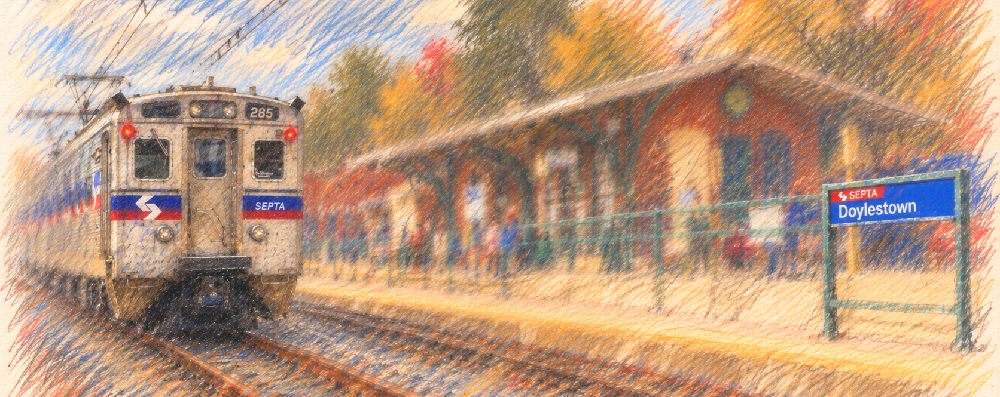
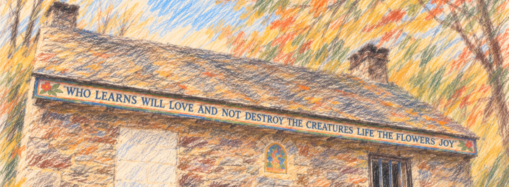
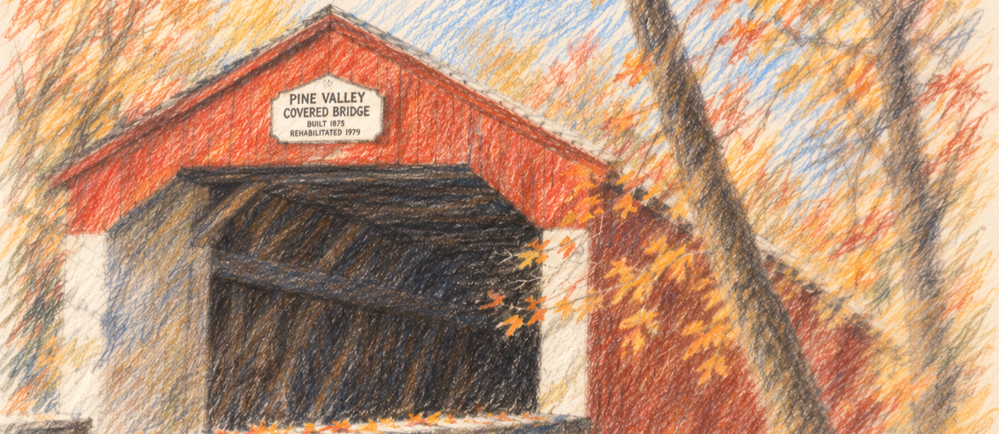

Returning to Doylestown after several years abroad: familiar place, different era

The County Theater.
Coming back to Doylestown in autumn 2026 after leaving for Chile in summer 2019 will probably produce an unusual combination of immediate familiarity and delayed reverse culture shock. Seven years is long enough that American life has changed noticeably, but not long enough for Central Bucks to have become culturally unrecognizable. In fact, because you grew up there rather than merely having lived there briefly, a surprising amount is likely to snap back into place almost automatically.
As a geographer, be assured that the geography of your life is still there. The same roads take you from Doylestown to New Britain to Chalfont and beyond; Pine Run and Doyle are still operating schools; Lenape and CB West still occupy essentially the same roles in the local landscape. But the continuity is broader than school buildings. The County Theater is still lighting up East State Street; Siren Records is still selling vinyl a few doors away; the Doylestown Bookshop is still an independent downtown bookstore; Bagel Barrel is still turning out bagels on West State; Paganini, Pag's Pub and the wine bar still form their little State Street ecosystem; and Altomonte's remains the kind of place where “going to the Italian market” requires no further explanation. The Mercer Museum, Fonthill and the Tile Works are still sitting there looking as though a particularly eccentric civilization constructed them and then vanished.
Central Bucks is still Central Bucks
Central Bucks genuinely became a nationally visible school-politics battleground while you were away. The fights over books, LGBTQ issues, school policy and parental rights were unusually intense, and the 2023 elections produced a sharp reaction against the previous board direction. Politics is probably more conspicuous in local life than it felt in 2019, particularly online and during election season.
But that does not mean ordinary life in Doylestown consists of people constantly sorting one another into political camps. By the middle of the decade, school-board politics had become noticeably less feverish, and the district's current priorities again sound recognizably like those of a large suburban school system: academic achievement, technology, health and wellness, and community engagement. Most encounters will still be about jobs, children, houses, the Eagles, traffic, restaurants, school, weather and what somebody is doing that weekend. There is also an important distinction between Bucks County politics and actually living in Doylestown. A closely divided county produces dramatic election maps and national headlines; buying coffee on State Street does not feel like participating in a swing-state focus group.
There is an interesting 2026 wrinkle inside Central Bucks itself: the district has changed from its old K–6 / 7–9 / 10–12 arrangement to K–5 / 6–8 / 9–12, so Lenape is now conventionally a middle school and CB West includes ninth grade. Doyle remains in the Lenape/West feeder pattern. The Doylestown Bookshop offers a smaller version of the same phenomenon: it is still the bookstore that opened downtown in 1998, but it changed local ownership in 2023. That is almost a metaphor for the whole homecoming. The institutions are where you remember them, but the personnel, internal arrangements and surrounding context have shifted.
The deeper Central Bucks identity remains unusually durable. School affiliations still locate people socially and geographically. Saying that you went to Pine Run or Doyle, then Lenape and West, conveys a small biography to another person who grew up there. You know the roads, the neighboring towns, the school rivalries, the odd distinctions between communities that outsiders might barely perceive, and the peculiar mental geography by which something can be fifteen minutes away and nevertheless belong to a completely different local world. That accumulated familiarity matters more than it might sound like it should from the outside.
The commercial map will feel familiar, then suddenly not
The business landscape is where the “same place, different era” feeling may become most literal. Some of the names that help orient downtown are still exactly where your memory expects them to be. The County Theater has occupied its East State Street site in its present form since 1938. Siren Records has been an independent record store since 1988. Bagel Barrel dates to 1993, the Doylestown Bookshop to 1998, and Paganini to 1990. None of those is merely a place to buy something; collectively they are part of the visual shorthand by which you recognize that you are in Doylestown rather than in an interchangeable Pennsylvania suburb.

The Bagel Barrel, under new ownership, looks exactly the same as it did seven (or seventeen) years ago.
At the same time, there have been some conspicuous losses. Pennsylvania Soup & Seafood closed in 2024 after seventeen years in Main Street Marketplace. Quinoa, after more than a decade on East State Street, closed in January 2025. The Doylestown Shopping Center Rite Aid closed during the chain's bankruptcy in early 2024. Waters Edge Winery & Bistro arrived downtown in 2024 and was gone again by late 2025. Lil' Dom's disappeared from its old Easton Road strip for most of 2025 and then resurfaced inside the borough on South Main Street. Those are exactly the sorts of changes that can briefly scramble a hometown mental map: you remember not merely a road, but what was supposed to be at a particular corner.
The largest visual change is probably on 611. The Barn Plaza Regal, the big multiplex with the fake silos that functioned as a Central Bucks landmark whether anyone admired the architecture or not, closed in 2023 and was demolished around the turn of 2026. The plaza around it has been transforming quickly. Barnes & Noble opened there in 2024, Bucks County's first Whole Foods followed in 2025, and newer restaurants such as Chipotle and First Watch joined the complex. The old theater site itself is being rebuilt as a cluster of smaller retail and restaurant spaces rather than another single large anchor.

Barn Plaza, transformed.
North Main Street has changed too. A Target opened in the Doylestown Shopping Center in 2024 in the space assembled from the former Bon-Ton end of the center, bringing with it the very 2020s combination of Target, CVS, Starbucks, Ulta, app ordering and drive-up pickup. That is a useful symbol of the broader change: the local commercial landscape has not emptied out so much as been recomposed. Some familiar independent anchors endure; some middle-aged local favorites have vanished; and the larger shopping centers have become denser, more polished and more nationally branded.
Doylestown is wealthier and more expensive, but it has not become the Main Line
Housing is probably the clearest material difference from 2019. Doylestown is substantially more expensive, and the broader Bucks County market has absorbed both years of housing inflation and continued demand from Philadelphia, New Jersey and New York. Returning after seven years away, you may find that prices attached to perfectly ordinary houses now look faintly ridiculous.
The borough has also moved somewhat further upscale. Some businesses will seem more polished, expensive and consciously oriented toward a particular idea of the “Bucks County lifestyle.” The town's attractiveness to affluent professionals was hardly invented during COVID, though. Doylestown was desirable long before 2020; the trend accelerated rather than appearing from nowhere. The frantic housing atmosphere of the early pandemic years is no longer a good description of everyday 2026 conditions, but the durable change is simply that the price of admission has risen.
That may create an odd split in your perception of the town. Architecturally and geographically, it remains remarkably familiar. Economically, some parts of it will feel as though somebody quietly changed all the numbers while you were gone.
Remote work has changed the rhythm of the borough
One of the more pleasant post-2019 changes is that Doylestown may feel somewhat more alive during the weekday. The older suburban pattern sent a significant share of professional workers out of Bucks County every morning. Hybrid and remote work mean that more of them remain nearby. Coffee shops, lunch places, parks and sidewalks therefore have a little more daytime life than a bedroom-community model would suggest, and coworking spaces have become ordinary enough that historic downtown properties can be repurposed specifically around remote professionals.
The train has not disappeared, though. The Lansdale/Doylestown Line still gives the borough a direct connection to Philadelphia throughout the day. SEPTA has had an unsettled post-pandemic decade, but Doylestown has not simply become a place where transit vanished and everybody resigned themselves to driving.

Doylestown Station.
That balance remains one of the town's strengths: it is unmistakably suburban and car-oriented while still possessing a genuine town center and a rail connection to a major city.
In that same vein, one of the more positive legacies of 2020 is the expansion of outdoor public life downtown. The borough's experiments with pedestrianized streets evolved into the recurring Borough Block Party program. Sections of Main, State and Court Streets close to cars on Friday and Saturday evenings for outdoor dining, shopping, music and street activity. There are two such weekends already scheduled for October, and the streets will remain active into the evening.
This fits into a broader civic calendar that remains strikingly busy: concerts, community walks, recreation, arts programming, seasonal events, local boards and volunteer organizations continue alongside the museums, restaurants, parks and other institutions that have long given Doylestown more civic texture than a typical suburban commercial center.
Some late-night businesses and 24-hour operations have disappeared, but it is better understood as a shift in nighttime culture than a collapse of community life. There may be fewer places to eat pancakes at 2:30 in the morning. There are arguably more opportunities to spend a pleasant Friday evening walking around the center of Doylestown without traffic.
That may be particularly noticeable after Chile. Downtown Doylestown has acquired slightly more of the quality of people simply occupying public space in the evening rather than treating streets exclusively as conduits between parked cars and indoor destinations.
America itself will require some reacclimation
There will, of course, be a layer of reverse culture shock that has relatively little to do with Bucks County. Seven years is enough time for the background machinery of American life to have changed.
You will have to reactivate the peculiar arithmetic of sales tax, tipping and service charges after years in a country where the displayed price is generally the amount actually paid. Prices for restaurants, housing, healthcare and services may seem startlingly high, while electronics, clothing and ordinary consumer goods can seem unexpectedly cheap and abundant by comparison. Cash has receded further from daily life, and tapping a card or phone is normal enough that even SEPTA Regional Rail accepts ordinary contactless payment.
The phone has also become more thoroughly embedded in ordinary errands. Parking, restaurant wait lists, pharmacy notices, grocery pickup, event tickets and countless other transactions now expect an app, QR code, text message or online account. Newer cars have accumulated screens and driver-assistance systems; delivery vehicles and pickup spaces have multiplied; true 24-hour retail is less common than it once was. Healthcare and credit will still possess the characteristically American ability to turn mundane transactions into administrative systems.
Some of this will briefly seem ingenious, some absurd, and most of it will disappear into the background surprisingly quickly. It matters to the experience of coming home, but it is not really a Doylestown story. The more lasting reverse culture shock is likely to be social.
The deeper reverse culture shock will probably be social
After seven years in another country, some of the strangest things will be extremely ordinary American behaviors.
If Chile has accustomed you to later meals, more spontaneous social arrangements, extensive everyday Spanish, denser urban living or different rhythms of family and friendship, American suburban life may suddenly seem early, scheduled, efficient, private and car-centered.
People may arrange something for “next Saturday at six” rather than simply appearing. A friend may be genuinely delighted that you have returned and immediately propose getting together three weekends from now. That does not necessarily mean they are less interested. In suburban American adulthood, particularly among people balancing children, careers and commutes, friendship often has to be operationalized through calendars.
Customer service may seem simultaneously warm and scripted. Servers introduce themselves by first name. Retail workers enthusiastically ask how you are doing. Strangers make completely unsolicited small talk. After a week or two you may suddenly hear yourself doing the same thing again.
Conversely, your body may have acquired Chilean habits without consulting you. You may begin an interaction with hola, reflexively say permiso, drop ya into English, expect a cheek kiss where somebody else is preparing for an American side-hug, or feel faintly astonished that somebody considers 6 p.m. an entirely reasonable dinner time. These are small moments rather than dramatic cultural collisions, but they are what make reverse culture shock recognizable.
More important is what seven years of genuine immersion does to the categories themselves. Chile has not simply been somewhere you lived while remaining psychologically outside it. Living your ordinary adult life there—working, arguing, making friends, dealing with bureaucracy, developing routines, acquiring linguistic reflexes, understanding jokes without translating them and gradually ceasing to regard most things as particularly “Chilean”—is different from travel. Eventually another culture stops presenting itself as foreign culture and becomes merely the environment in which Tuesday happens.
That produces a peculiar problem when you return. Doylestown will still be home, but “home” will no longer mean the only place whose social logic feels natural. You may understand Pennsylvania more instinctively than ever precisely because you now have something real against which to compare it. Things that once seemed simply normal become recognizably American; things in Chile that once seemed conspicuously foreign may, in retrospect, reveal themselves as habits you have quietly adopted.
There is also a deeper identity change. In Chile, being American is one of the facts that distinguishes you. People are interested in what America is like, and after seven years you inevitably develop stock answers to recurring questions. In Doylestown, being American becomes completely unremarkable again. Meanwhile, the Chilean part of your adult life is invisible until you explain it. People who knew you before 2019 may instinctively understand your years abroad as an interesting chapter that has now concluded, while from your perspective those years altered the person who has returned.
That can feel both liberating and strangely flattening. You have gone home, but the person doing the returning no longer fits perfectly inside the version of home he left.
The mundane things may feel wonderful
Not every reverse-culture shock will be negative.
There are small American conveniences you may have stopped thinking about altogether: ice water arriving automatically at a restaurant, public bathrooms, huge parking lots, fast clothes dryers, central heating everywhere, screens in windows, garbage disposals, enormous refrigerators, permissive return policies, and ordering some obscure household object on Tuesday night only to find it sitting outside your door on Wednesday. Some aspects of American excess are genuinely pleasant when you have not had them for years.
And while the prices, the cash, and the apps may be a bit mind-boggling, there is real truth to the fact that everyday economics in America has its upsides. No Unidad de Fomento juggling, no checking to see the peso-to-dollar spot conversion rate, no reports about the copper price forecast and its unique impact on growth and development. You can go surprisingly long stretches without thinking about what the Federal Reserve is doing, what the dollar did that morning, or whether some ordinary contract, rent, fee or long-term obligation is quietly moving because an inflation-linked accounting unit moved with it.
Coming back from Chile, macroeconomics has probably leaked into your everyday conversations: the dollar, the UF, inflation, interest rates and copper are not merely things economists discuss on television but numbers that can affect what something costs, what a payment will be next month, or whether this is a particularly good week to buy something imported. Back in Pennsylvania, those forces obviously still exist, and Americans complain endlessly about inflation, mortgage rates and the price of groceries, but everyday prices are more likely simply to be stated in dollars and remain psychologically attached to the number printed on the label. There may be something unexpectedly restful about not needing quite so much ambient economic literacy merely to understand what things cost.
There is something very Doylestown about leaving Doylestown
There is an interesting local precedent for all of this.
Margaret Mead grew up in the Doylestown area, lived for a time on West Court Street and graduated from Doylestown High School in 1918. Only a few years later she went alone, at twenty-three, to Samoa for the fieldwork that became Coming of Age in Samoa. Her career was built around one of the most consequential ideas that prolonged immersion abroad can teach: things that appear universal when viewed from inside one's own society may turn out to be cultural arrangements when viewed from somewhere else. Mead remained attached to Bucks County throughout her life even as her work carried her through the Pacific and made her one of the world's best-known anthropologists.
James Michener offers a different version of the same outward movement. He grew up in Doylestown, graduated from Doylestown High, left Pennsylvania, studied and traveled abroad, served in the South Pacific and eventually spent much of his writing life trying to understand places through their geography, history and cultures. Even the James A. Michener Art Museum now sitting in the old county prison is a physical reminder that one of Doylestown's most conspicuous cultural institutions bears the name of someone whose imagination was persistently directed beyond it.

Little House in the Woods, Fonthill.
And before either Mead or Michener, William Edgar Geil came out of New Britain and Doylestown and spent years traveling through China, Africa, Asia and the Middle East, documenting what he encountered through photographs, field notes and books. The Doylestown Historical Society still preserves his papers and describes him as an international explorer from Doylestown whose work documented cultures far from Bucks County.
Extend the circle slightly beyond Doylestown itself and Pearl S. Buck makes the pattern harder to miss. After spending much of her childhood and early adulthood immersed in China, she eventually made her home at Green Hills Farm in Bucks County and devoted much of her writing and public work to interpreting one culture to another. The organization that continues her work still describes its mission in explicitly intercultural terms: bridging cultures and cultivating understanding across them.
It would be a little grandiose to pretend that spending seven years in Chile makes every returning Central Bucks expatriate part of some coherent Doylestown intellectual tradition. But there is something pleasingly local about the fact that this small Pennsylvania town has repeatedly been associated with people who left familiar surroundings, immersed themselves elsewhere, and discovered that looking seriously at another society changed how they understood their own.
Perhaps that is one of the subtler things you will be bringing back with you.
The value of complete immersion is not merely that you learn another country. Eventually you acquire a second vantage point from which to see the first one. Doylestown will therefore be simultaneously less exotic and more interesting than it was before you left. The County Theater is still just the County Theater. State Street is still State Street. Yet after years of navigating a place where none of those things existed—and where an entirely different collection of routines eventually became ordinary—you may see your hometown with something closer to an anthropologist's double vision: as both a completely natural environment and a highly particular culture.
That may be the real difference between returning from a long trip and returning from a life abroad.
Pennsylvania autumn may hit differently
And October may produce the strongest homecoming sensation of all.
You know intellectually what autumn in Bucks County is like. That is different from experiencing it again after seven years away. Cold morning air, damp leaves, wood smoke, pumpkins on porches, Halloween decorations, football, farms, the particular reds and oranges of Pennsylvania trees and darkness arriving earlier can make a childhood landscape feel emotionally familiar before your conscious mind has caught up.
The first month may consequently contain a long series of small moments of: Oh right. This. Some will concern America—the tipping screens, the prices, the peculiar administrative rituals. But the stronger ones may be much narrower: hearing the local accent again, driving roads without thinking about them, recognizing somebody's surname as belonging to a family you knew twenty years ago, walking past the County Theater at night, finding yourself able to visualize what is around a bend before you reach it, or remembering some completely useless detail about a place that has been stored untouched since childhood.
Familiar place, different era
Doylestown in 2026 is not the Doylestown of June 2019 preserved in amber. Housing is more expensive. Consumer life is more digital. Politics became more conspicuous. Remote work changed weekday rhythms. The pandemic altered restaurants, shopping, public space and expectations around service. Smartphones have inserted themselves into more transactions. Some businesses disappeared and others replaced them. The people you knew kept living their lives.
But none of that amounts to a cultural rupture. The stranger experience may therefore be discovering how quickly it feels like home again.
And perhaps “home” will mean something slightly different now. Before leaving, it could simply be the environment that did not require explanation. After seven years of genuine immersion somewhere else, you return knowing that another place can acquire that same quality. Chile does not disappear when Pennsylvania becomes ordinary again; it remains a second set of instincts, comparisons and memories operating quietly in the background.
You may spend the first few weeks noticing everything that changed and the following few months noticing how much did not. Eventually most of the American re-entry peculiarities will stop registering at all. The deeper change will remain: Doylestown will once again be the place you know without thinking, but no longer the only place you have known that way.
That seems less like coming back to where you started than returning with a second point of view.

Pine Valley Covered Bridge (New Britain).